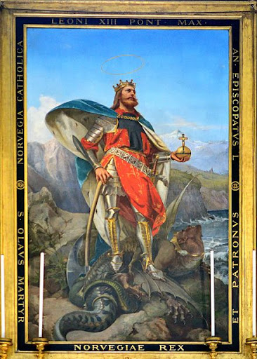

„Hoće li tko za mnom, neka se odreče samoga sebe, neka uzme svoj križ i neka ide za mnom.” (Mt 16,24)

Olav II. Haraldsson, poznatiji kao Sveti Olav, bio je norveški kralj koji je vladao od 1015. do 1028. godine. Rođen oko 995. godine, potjecao je iz kraljevske obitelji i već u mladosti pokazao iznimnu hrabrost i ambiciju. Njegov životni put bio je obilježen borbom za ujedinjenje Norveške i snažnim zalaganjem za pokrštavanje zemlje, što ga je na kraju dovelo do mučeničke smrti i statusa nacionalnog sveca i zaštitnika Norveške.
Olav je svoje mladenačke godine proveo kao vikinški vođa, putujući i boreći se diljem sjeverne Europe, uključujući Englesku i Irsku. Tijekom tih putovanja došao je u doticaj s kršćanstvom i postao uvjereni vjernik. Nakon povratka u Norvešku 1015. godine, proglasio se kraljem i započeo odlučnu kampanju za uspostavu centralizirane kršćanske države. Njegova politika uključivala je zabranu poganskih obreda, rušenje lokalnih idola i gradnju crkava, što je izazvalo otpor kod mnogih moćnih poglavara i plemenskih vođa koji su se bojali gubitka svoje autonomije i tradicije.
Unatoč snažnom otporu, Olav je uspio nametnuti svoju vlast na većem dijelu Norveške, uspostavivši jedinstvenu kraljevsku vlast i crkvenu hijerarhiju. Njegova vladavina označila je prijelomnicu u povijesti Norveške, uvodeći je u krug europskih kršćanskih kraljevstava. Međutim, njegova nastojanja da centralizira vlast i nametne crkvene zakone dovela je do pobune koju je predvodio danski kralj Knut Veliki. U bici kod Stiklestada 29. srpnja 1030. godine, Olav je poražen i ubijen. Prema legendi, umro je s krunom na glavi, što je simboliziralo njegovu posvećenost kraljevstvu i vjeri.
Nakon njegove smrti, počelo je brzo širenje štovanja kao sveca. Njegovo tijelo, koje navodno nije trunulo, postalo je središte hodočašća, a crkva u Nidarosu (današnji Trondheim) izgrađena je iznad njegovog groba. Papa Aleksandar III. službeno ga je kanonizirao 1164. godine, a njegov blagdan, Olavov dan, postao je najvažniji nacionalni praznik u Norveškoj. Sveti Olav simbolizira jedinstvo, pravdu i kršćansku vjeru, a njegov lik i dalje ima snažan utjecaj na norveški identitet i kulturu.